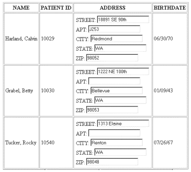

|
| ||
|
| ||
Charlie Heinemann
Program Manager, XML
Microsoft Corporation
Updated: March 18, 1999
The following article was originally published in the Site Builder Network Magazine "Extreme XML" column (now MSDN Online Voices Extreme XML).
 Download the source code for this article (zipped, 3K)
Download the source code for this article (zipped, 3K)
In past articles, I've described ways to use Extensible Stylesheet Language (XSL) to transform XML into HTML for display. There are, however, other fine uses for XSL. It can be used to transform your current XML into new XML. Let's say, for instance, your XML exists in the following format:
<patient> <name>Joe Biggs</name> <patientID>10092</patientID> </patient>
However, an application that uses the data expects it in another format:
<patient name="Joe Biggs" patientID="10092"/>
XSL can be used to transform the former into the latter, making the XML friendly to the application that loads it.
In addition to the above scenario, XSL can be used to sort and filter data. In the remainder of this article, I will show you how to use the sorting and filtering capabilities of XSL in conjunction with the XML Data Source Object (XML DSO) to create a basic data entry Web application.
The basic data entry Web application that I will describe and which is contained in the zip file accompanying this article processes the following data set:
<patients>
<patient patientID="10029">
<name>Harland, Calvin</name>
<address>
<street>18891 SE 90th</street>
<apt>J253</apt>
<city>Redmond</city>
<state>WA</state>
<zip>98052</zip>
</address>
<birthdate>06/30/70</birthdate>
</patient>
<patient patientID="10030">
<name>Grabel, Betty</name>
<address>
<street>1222 NE 100th</street>
<apt></apt>
<city>Bellevue</city>
<state>WA</state>
<zip>98053</zip>
</address>
<birthdate>01/09/43</birthdate>
</patient>
<patient patientID="10540">
<name>Tucker, Rocky</name>
<address>
<street>1313 Elaine</street>
<apt></apt>
<city>Renton</city>
<state>WA</state>
<zip>98048</zip>
</address>
<birthdate>07/26/67</birthdate>
</patient>
</patients>
Now we can display the XML in the order that it exists -- an order based, I assume, on patient ID. However, what if the person doing the data entry needed to look the patient up by name? Then the best way to order the data set would be alphabetically. To reorder the data set, we can simply apply an XSL style sheet that sorts the "patient" elements in ascending order according to name.
The key to such a style sheet is the "order-by" attribute, as used in the following XSL element:
<xsl:for-each order-by="+ name" select="patient" xmlns:xsl="http://www.w3.org/TR/WD-xsl">
This element says: For the "patient" children of the root node, process those children in ascending order according to the value of the "name" element within each "patient" element.
Within that "xsl:for-each" element are the directives on how to process each "patient" element. These directives serve to generate the same XML that exists in the original "patient" element. The full style sheet is then as follows:
<patients>
<xsl:for-each order-by="+ name" select="patient"
xmlns:xsl="http://www.w3.org/TR/WD-xsl">
<patient>
<xsl:attribute name="patientID">
<xsl:value-of select="@patientID"/></xsl:attribute>
<name><xsl:value-of select="name"/></name>
<address>
<street><xsl:value-of select="address/street"/></street>
<apt><xsl:value-of select="address/apt"/></apt>
<city><xsl:value-of select="address/city"/></city>
<state><xsl:value-of select="address/state"/></state>
<zip><xsl:value-of select="address/zip"/></zip>
</address>
<birthdate><xsl:value-of select="birthdate"/></birthdate>
</patient>
</xsl:for-each>
</patients>
Notice that all I did to transform the original XML to the new XML using XSL was to pass through the XML tags within the style sheet, filling those tags as I went with values from the original XML.
The style sheet shown above sorts the XML elements according to name. The key to sorting is the value of the "order-by" attribute. Filtering, on the other hand, is done through the "select" attribute. In fact, the above style sheet does filter the data. This is not obvious, though, because no "patient" elements get left out. However, if we change the "xsl:for-each" start tag to read:
<xsl:for-each order-by="+ name" select="patient[name$lt$'M']" xmlns:xsl="http://www.w3.org/TR/WD-xsl">
we will process only those "patient" children that have a "name" element with a value less-than 'M'. Our original XML document will be transformed into an XML document that contains information about patients whose names start with letters between A and M.
Now that we have some XML data and a way to sort that XML data, let's build a Web application that takes advantage of these capabilities.
This Web application will display the data within the XML document in a repeated table, allowing the user to change the data within the "address" element. The data initially displayed will be the complete XML document with the data presented as it is in the original document.
The XML DSO that ships with Internet Explorer 5 binds the table below to the data island pointed to by the DATASRC attribute:
<TABLE DATAsrc='#xmldso' BORDER CELLPADDING=3>
<THEAD>
<TH>NAME</TH>
<TH>PATIENT ID</TH>
<TH>ADDRESS</TH>
<TH>BIRTHDATE</TH>
</THEAD>
<TR>
<TD><SPAN DATAFLD="name"></SPAN></TD>
<TD><SPAN DATAFLD="patientID"></SPAN></TD>
<TD><TABLE DATAsrc="#xmldso" DATAFLD="address">
<TR>
<TD>STREET: <INPUT TYPE=TEXT DATAFLD="street"></TD>
</TR>
<TR>
<TD>APT: <INPUT TYPE=TEXT DATAFLD="apt"></TD>
</TR>
<TR>
<TD>CITY: <INPUT TYPE=TEXT DATAFLD="city"></TD>
</TR>
<TR>
<TD>STATE: <INPUT TYPE=TEXT DATAFLD="state"></TD>
</TR>
<TR>
<TD>ZIP: <INPUT TYPE=TEXT DATAFLD="zip"></TD>
</TR>
</TABLE>
</TD>
<TD><SPAN DATAFLD="birthdate"></SPAN></TD>
</TR>
</TABLE>
Notice that you can bind a cell within the table to the "patientID" attribute just as you would bind such a cell to an XML element. Unlike the XML DSO that shipped with Internet Explorer 4.0, the XML DSO that ships with Internet Explorer 5 treats attributes like elements.
The above table produces the following user interface:

The records displayed in the above table are sorted according to their original order in the XML document. However, we want the user to be able to sort them in ways that suit her purposes. Because we are going to create new XML documents and bind to those new documents, we first must retain a copy of the original document. This can be done using the cloneNode method on the xmldso document object:
var xmldoc = xmldso.cloneNode(true);
The variable xmldoc now holds the clone of the xmldso document object. We will use xmldoc as our master document.
We then create three buttons that allow the user to control what data is presented and in what order:
<INPUT TYPE=BUTTON VALUE="Sort By Name" onclick="sort(sortName.XMLDocument);"> <INPUT TYPE=BUTTON VALUE="Sort By Patient ID" onclick="sort(sortNumber.XMLDocument);"> <INPUT TYPE=BUTTON VALUE="Get Names A through M" onclick="sort(getAtoM.XMLDocument);">
These buttons call the sort function and pass that function a parsed XSL document. The sort function is as follows:
function sort(xsldoc){
xmldoc.documentElement.transformNodeToObject(xsldoc.documentElement,xmldso.XMLDocument);
}
Within the sort function, the XML document object, xmldoc, which contains the master XML, assigns the new XML that results from taking the master XML document, xmldoc, and applying the desired style sheet to the xmldso document which is bound to the table. This is done using the new transformNodeToObject method on the XML Document Object..
The data within the repeated table is live with respect to the XML document bound to the repeated table. However, it is not live with respect to the master document from which the data came. Therefore, we need to sync up the two documents. To do this, I have written a syncChanges() function that tests to see whether any of the "patient" elements within the bound document, xmldso, are different than the corresponding elements in the master document, xmldoc:
function syncChanges(){
for (var i=0;i<xmldso.documentElement.childNodes.length;i++)
{
var currentNode = xmldso.documentElement
.childNodes(i).cloneNode(true);
var query = "patient[name = '" +
currentNode.childNodes.item(0).text + "']";
var origNode = xmldoc.documentElement
.selectSingleNode(query);
if (currentNode != origNode)
{
xmldoc.documentElement.replaceChild(currentNode,origNode);
}
}
}
To ensure that the two documents are always synched, I simply amend my sort function to include a call to syncChanges():
function sort(xsldoc){
syncChanges();
xmldso.loadXML(xmldoc.documentElement
.transformNode(xsldoc.documentElement));
}
The XML DSO allows a simple declarative method of displaying data. It also has the nice feature of being live with respect to the bound XML document. Using XSL, you can further increase the benefits of the XML DSO and have even greater control over what data is displayed and how that data is displayed.
Charlie Heinemann is a program manager for Microsoft's Weblications team. Coming from Texas, he knows how to think big.
Did you find this material useful? Gripes? Compliments? Suggestions for other articles? Write us!
© 1999 Microsoft Corporation. All rights reserved. Terms of use.